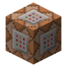

MC 指令生成器搜物品名就能出 /give · 坐标、效果、时间天气一起生成，复制即用
—
—
—
/gamerule keepInventory true
@p（最近的玩家）、@s（自己）、@a（所有人），也可以直接写玩家名。
物品名支持中文与英文（数据来自 26.3 版本的方块与物品清单，一千多条）。
这里只生成最稳的 /give <目标> <物品> <数量>，不带 NBT 组件——组件写法各版本差异大，手改容易报错。
指令需要在开启作弊的世界里，或用管理员权限执行。